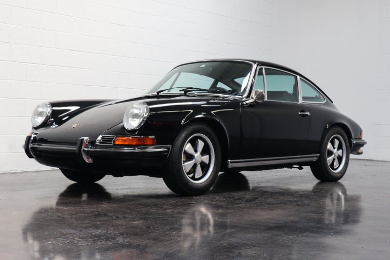
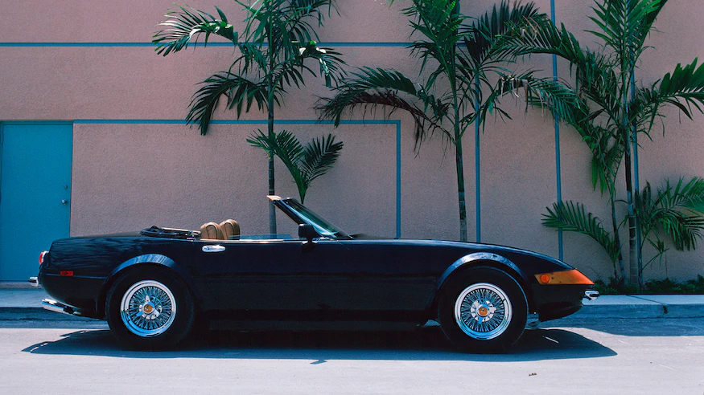
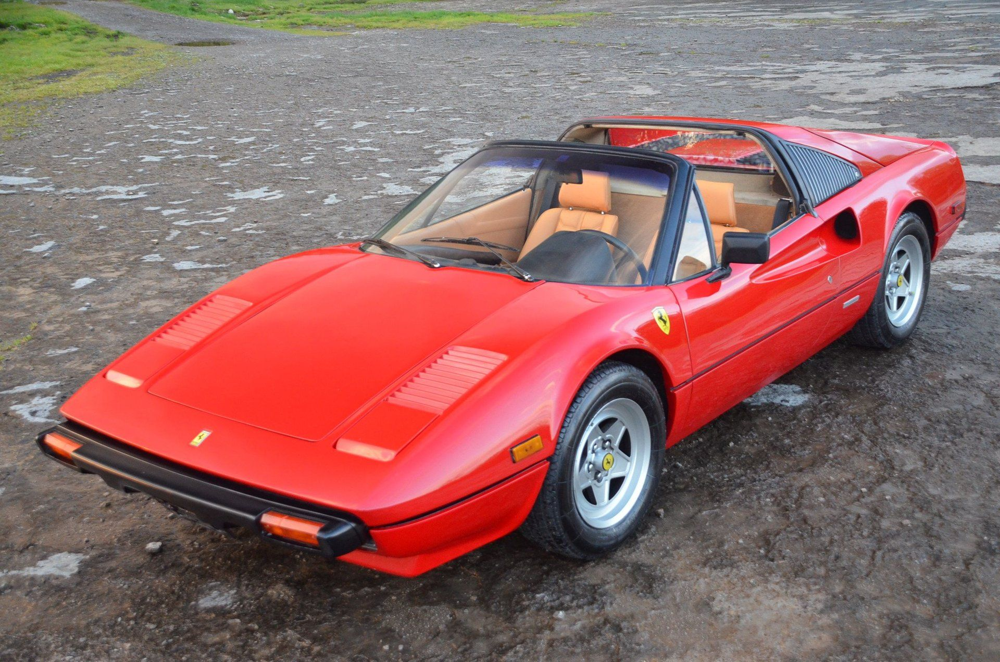

The Porsche 911 (pronounced Nine Eleven or in German: Neunelfer) is a two-door 2+2 high performance rear-engined sports car introduced in September 1964 by Porsche AG of Stuttgart, Germany. It has a rear-mounted flat-six engine and a torsion bar suspension. The car has been continuously enhanced through the years but the basic concept has remained unchanged.[1] The engines were air-cooled until the introduction of the 996 series in 1998.
Click to see!
The Ferrari 365 was Ferrari's large front-engine, rear-wheel-drive 2- and 2+2-seater grand tourer line. Introduced at the 1966 Geneva Motor Show, it replaced the 330 and 500 Superfast.
Click to see!
The Ferrari 308 GTB berlinetta and targa topped 308 GTS are V8 mid-engined, two-seater sports cars manufactured by the Italian company Ferrari from 1975 to 1985. The 308 replaced the Dino 246 GT and GTS in 1975 and was updated as the 328 GTB/GTS in 1985. The similar 208 GTB and GTS were equipped with a smaller, initially naturally aspirated and later turbocharged, two-litre engine, and were sold mainly in Italy.
Click to see!
